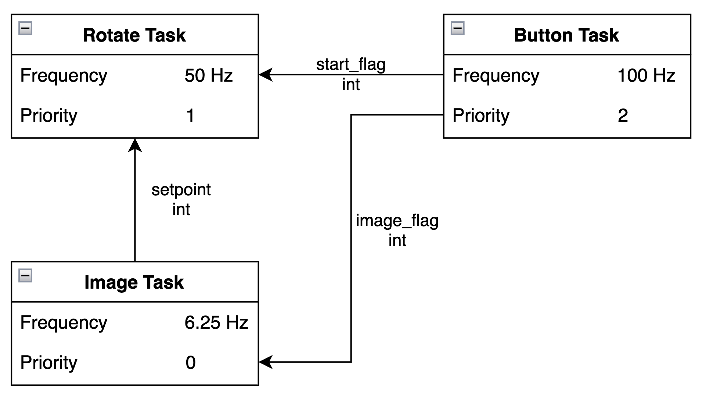

This is the software documentation for the ME 405 final project.
Software Overview
The software running the turret was designed to multitask using a task scheduler to efficiently run the turret. There are three tasks: button task, image task, and rotate task. The button task monitors the button and waits the appropriate 5 seconds before signaling the image task and rotate task to start. The image task gets a thermal image from the camera and parses the image data into a setpoint to send to the rotate task. The rotate task rotates the turret towards the identified target and fires the turret by actuating the servo.
Software Organization
This project is organized such that the main.py file imports necessary driver classes. This file also creates the turret generator class that contains the individual task generator functions as methods of the turret generator class to allow for ease of use of shared variables. When run as the main file, main.py initializes the tasks and continuously runs the task scheduler until a KeyboardInterrupt is caught.
The encoder_reader.py file contains the class to interface with the encoders built into the DC motors used in this project as well as the ME 405 lab.
The mlx_cam.py file contains the class to interface with the MLX90640 thermal infrared camera. This camera is used to obtain information of the target's location to derive a setpoint to aim the turret to.
The motor_driver.py file contains the class to interact with and actuate the motor through the L6206 Motor Driver Hat attached to the STM32 board. This motor is what is used to rotate the turret.
The proportional_controller.py file contains the class that can run a proportional controller with a changeable position gain and derivative gain. This class is initialized to read from the encoder and actuate the motor.
The servo_driver.py file contains the class to set the position of the servo that pulls the trigger of the turret.
The test.py file contains testing functions and classes useful for solving issues and learning more about this project. The main.py file does not import the test.py file, this is simply included for extra information about some of our testing processes.
Diagrams
This section includes the task diagram and state diagrams to provide more information on the control of the turret.
Task Diagram

Figure 1. This figure illustrates the task diagram for the turret process.
State Diagrams
Rotate Task
Figure 2. This figure illustrates the state diagram for the rotate task of the turret process.
Image Task
Figure 3. This figure illustrates the state diagram for the image task of the turret process
Button Task
Figure 4. This figure illustrates the state diagram for the button task of the turret process
Schematics
This section includes schematics of some of the custom electronic design used for this project.
Button Schematic
Figure 5. This figure illustrates the electrical schematic designed to read an active low button to start the turret process. PC2 is the signal input to the microcontroller.
Servo Schematic

Figure 5. This figure illustrates the electrical schematic designed to convert 12V DV to ~6V with a 7805A JRC transistor to supply the servo used to pull the trigger on the turret. PB3 is the signal output from the microcontroller to control the PWM to the servo and therefore position of the servo.